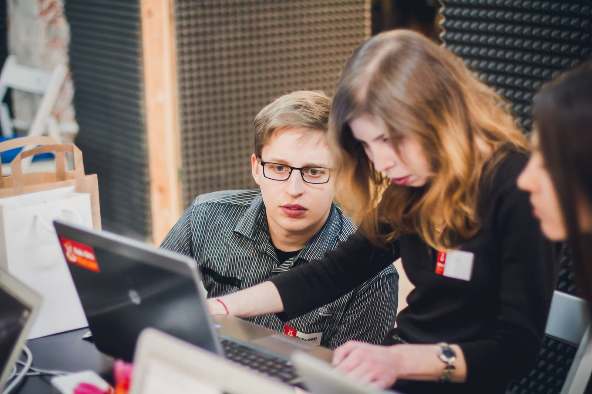
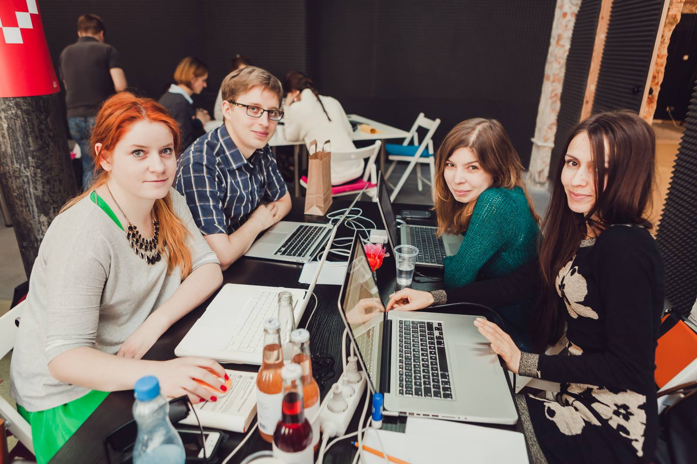

Why I changed my career path
OK, time for a coming out. I am 33 years old and I have just started my career as a Junior Front-End Developer. My former position? Senior Graphic Designer. I have been working in the design industry for 9 years, after completing 5 years long studies in the Graphic Design faculty. Adding 2 years of pre-study preparations, it gives me 16 years that I have just turned into dust. Sounds gloomy but, believe me, I feel really happy and excited. Many people ask me why I quit a stable, well-paid job, with no after-hours and familiar environment to… work much more for less(which is obvious at the beginning). Why did I then spend a big part of my savings to get into a full-time programming bootcamp that was eating up to 11-12 hours a day? And how come I find it really cool as opposed to designing, which people believe is more play than work? Well, the answer demands a whole story.
The choices
I was struggling with career choices from a young, actually too young age. The world seemed so inspiring that I wanted to do everything, preferably, everything simultaneously. ;) And yet, everybody around told me I needed to pick up just one thing and concentrate on that since, they explained, I’d have only one profession in my adult life. Trying to figure out what to choose from the growing amount of possibilities, one thing was obvious to me: it had to be something creative. I ended up going for graphic design - not that I had any special manual skills - but I have always loved arts of any kind and designing seemed really alluring. Plus, since the collapse of Communism in Poland, the advertising industry was thriving. Finishing our studies on 2007, me and almost all my fellow students dreamed of working in a “real” advertising agency, imaging it as the coolest and most rewarding job in the world.
Imagination vs reality
When I started my first job as a Junior Graphic Designer in a small advertising agency, the first signals of the upcoming economic crisis were already discernible. At the same time, Poland was still rushing ahead to make up for dozens years lost for our Eastern Big Brother. In consequence, the advertising industry was incredibly hungry for more work done but at the same time, not rich enough to reassure decent working conditions, especially for the newbies to the design job - at least that’s how it looked like in most of the cases. It still does. It was normal to work several hours a day, leave the office at night or even early in the morning, be bullied by your boss and Account Managers, always afraid of being fired. Trainings? Development? Sure, you have to do it somehow. At your own cost. After hours.
Designing was cool during studies when we created things that mattered, even if only to us. Put eye to eye with the market’s needs we had to forget about the ideals. What counted was the satisfied client and his money, not the project that you probably wouldn’t like to sign with your name. All of that is a perfect prescription for burnout.
Obviously, this is only the black side of the advertising industry. I know happy designers who love their job, grow as professionals and would tell here an exact opposite story. I also had many bright days and times when I designed with true passion. However, much too often was I confronted with the dirty side of the business. So often that, year by year, my fear of the future and uncertainty about my career choice were growing.
Catching the balance
Years were passing, I was changing the workplaces, slowly figuring out my own ways in the designer’s profession. After periods of storms and stillness, I landed up in a nice small company ran by my former boss. Already experienced, I started to feel really well, appreciated and respected. The environment was friendly, salary was very good, “nine to five” did mean “nine to five”. And all would be great if not for the nagging thought: “what would I do if I lost it? where would I go?”. I was scared by the fact that beyond the cosy walls of this one-off company there was no place for me. How come, you could ask. Well, as I mentioned before, there is a professional development problem in the industry. For 9 years, even though at every job interview I highlighted how important professional development for me was (more even than wages), even though I was promised trainings and development - I wasn’t offered any. Ever. Pardon, once, in a huge corporation, I went through a procedural training. I learned from my colleagues which was fine until 2011. From then on, I was working as the only designer in a company and my growth just stopped. At the same time, the industry’s expectations have skyrocketed. So many new technologies, so much to learn - I didn’t even know what to start with. The longer it lasted, the more anxious I was. I felt like I was getting detached from the world, as if it all raced forward leaving me far behind. I simply could not accept this situation. And though, I had no idea how which way to go.
The coding story
Why coding? Why not just choose to learn more great design tools, sharpen my skills etc. Well, there were a few problems with that.
First, I never felt that designer’s job is a best fit for me. I didn’t want to admit even before myself but there were many times when doubted my career choice. It might have been because of unpleasant experiences in my former workplaces, or it was just an intuitive signal.
Second, when you work as a designer, it’s not professionals who judge your work. It’s the client. Client who often believes that it’s just knowing Photoshop tools that makes one a graphic designer. Client who forces their ideas which often result in a work that is, to put it bluntly, ugly as hell. Guess who’s gonna be blamed for that? ;)
And third, I was just tired of struggling with forces that were undeniably unsurmountable. Tired of getting things forever “more catchy”, “more dynamic”, “crazy but not too crazy”, “just not like this…” etc. I’m no fortune-teller, I don’t read minds. I missed explicit expectations, clear evaluation criteria, chances to grow in my profession.
It’s a funny thing with coding in my life: looking back I see that since I got the first experiences with the Internet, I wanted to learn to write websites (I absolutely had no idea that coding goes far beyond that). Now this one will take you aback: I didn’t know how to deal with Internet until the age of 20. True story. It was 2004 when I moved to my own apartment and got myself a broadband, then I learned how to use basic communicators, make do with Yahoo!, Google and Netsprint, manage emails and so on. 2 years later, after completing a short EU-funded training, I wrote my very first website using XHTML and table-based layout. It was a present for my dad who needed a website with an overview of his trainings’ offer. Actually, as for those days, it looked really nice. :)
As a designer, I needed some coding stuff for myself too: online portfolios, Wordpress blogs etc. I completed a few courses, some of them on-line, the others stationary, even finished postgraduate studies on Polish-Japanese Academy of Information Technology, two semesters on “Advanced Multimedia”, again, EU-funded. Honestly, I didn’t learn much on programming there, yet I reasserted my conviction that coding is really cool.
A breaking point came in 2013 - and 3 years must have passed before I realized that. I stumbled upon an announcement on Rails Girls workshops in Warsaw. I didn’t even know that there is a programming language called Ruby but since the workshop was dedicated to beginners, and it was about CODING, I applied and got approved.
The workshop lasted two days - definitely not enough to learn Ruby but enough to get to know the basics of programming, hear stories of people who have retrained and became developers, and finally - how to change one’s career path. I still keep pics from that time:


It was also at Rails Girls where I got to know there is a place called Coders Lab, an intensive full-time bootcamp that takes 6 weeks of hard work, costs a fortune - but actually guarantees you will find a job as a Junior Developer after completion. I asked my mentor what he thought about that and he told me that, yes, that’s a hard deal but for those ready to commit - it’s worth it. I took a discount flier for Coders Lab and kept it in a cabinet so that I saw it every day. Remember I told myself: “if anything else fails, I’ll go for it”.
May 2016, I woke up one morning, having a really tough year behind me, and it dawned on me quite mightily: “actually, isn’t NOW the right time”? I do not believe in stories of “one day change” of one’s life, I guess there was a huge subconscious process behind but the truth is: it was this morning when I took the decision. I quit my job. Enrolled to Coders Lab. Learned as hard as I could. And you know what? That was reaaaalllly cool. I simply couldn’t break away from coding, it turned out to be the most engaging, rewarding - and, yes, creative activity I’ve ever experienced. Obviously, it’s also wearing at times, as any job, I guess. But I feel that a developer’s profession is just a great fit to me.
…and what now?
Well, I started working as a Junior Developer a few days ago. So actually - it all just began. Once I settle down a bit, I plan to write a bit more on that. Keep your fingers crossed!